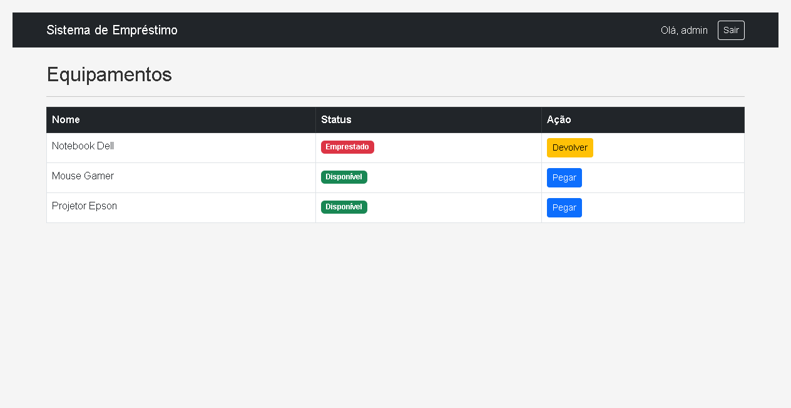
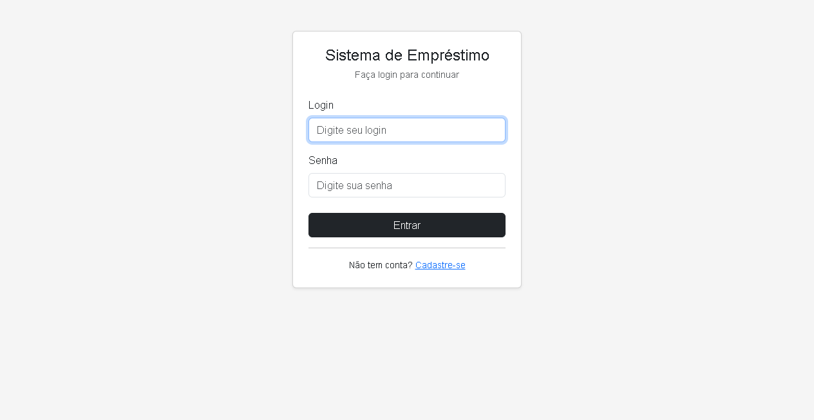
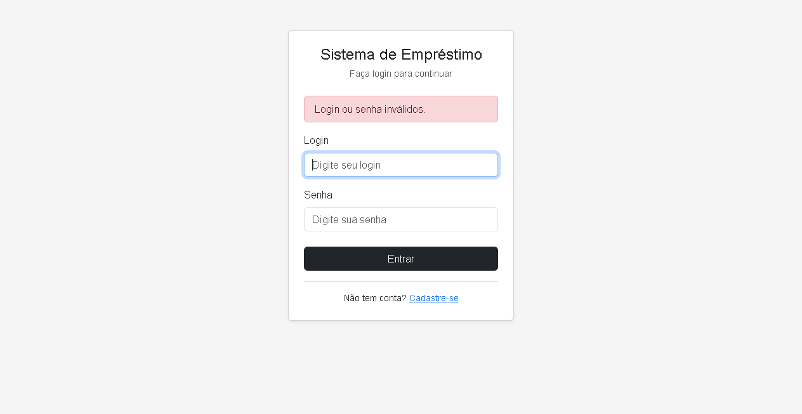
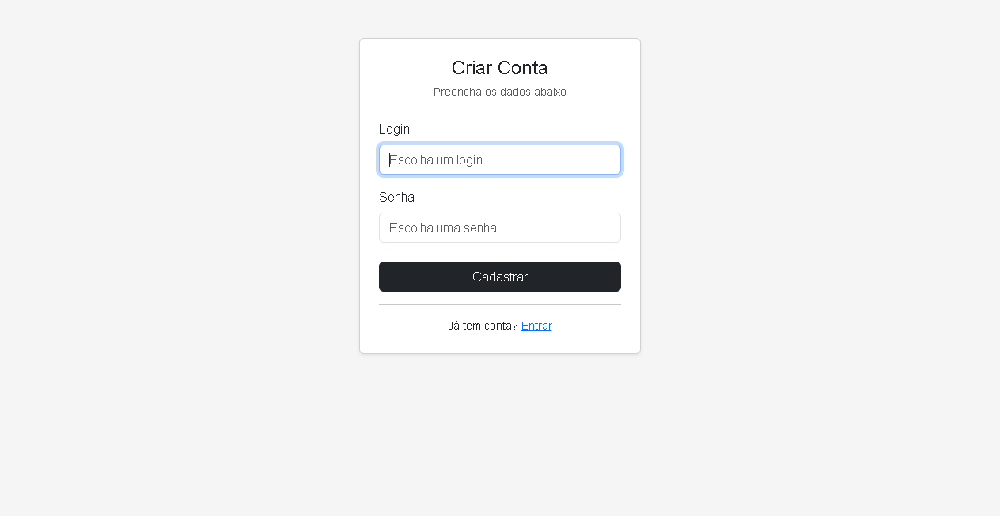
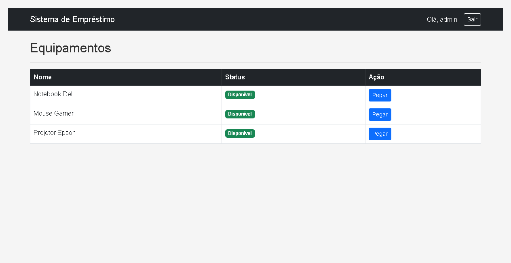

Paulo Silva
Gabriel de Paula
Guilherme Rennó
Adriano Malerba
O Sistema de Empréstimo de Equipamentos é uma aplicação web para controle de empréstimo de equipamentos de laboratório. Os usuários podem autenticar-se no sistema, visualizar os equipamentos disponíveis e registrar empréstimos e devoluções. O sistema mantém o histórico de status de cada equipamento e o vínculo com o usuário responsável pelo empréstimo.
O objetivo do projeto é acadêmico, desenvolvido para a disciplina de Teste de Software. O foco não é a complexidade da aplicação, mas sim a qualidade e cobertura dos testes automatizados, aplicando as técnicas de caixa branca (Pytest) e caixa preta (Selenium).
O sistema é dividido em duas camadas principais:
A autenticação e o controle de sessão são gerenciados pela extensão Flask-Login, com redirecionamento automático para a tela de login quando o acesso a rotas protegidas é tentado sem autenticação.
| Funcionalidade | Descrição |
|---|---|
| Login | Autentica o usuário com login e senha; sessão gerenciada pelo Flask-Login |
| Logout | Encerra a sessão e redireciona para a tela de login |
| Cadastro | Cria uma nova conta com login único e senha |
| Listagem de equipamentos | Tabela com nome, status visual (badge verde/vermelho) e botão de ação |
| Empréstimo | Altera o status do equipamento para Emprestado e salva o ID do usuário |
| Devolução | Restaura o status para Disponível e remove o vínculo com o usuário |
| Método | Rota | Descrição | Proteção |
|---|---|---|---|
| GET / POST | /login | Tela de autenticação | Pública |
| GET | /logout | Encerra a sessão | Login requerido |
| GET / POST | /cadastrar | Cria novo usuário | Pública |
| GET | / | Lista todos os equipamentos | Login requerido |
| GET | /pegar/<id> | Registra empréstimo do equipamento | Login requerido |
| GET | /devolver/<id> | Registra devolução do equipamento | Login requerido |
| Camada | Tecnologia | Versão |
|---|---|---|
| Backend | Python / Flask | 3.12 / 3.0.3 |
| Banco de dados | SQLite + SQLAlchemy | — / 3.1.1 |
| Autenticação | Flask-Login | 0.6.3 |
| Frontend | Jinja2 / Bootstrap | — / 5.3.0 CDN |
| Testes de caixa branca | pytest | 8.3.5 |
| Testes de caixa preta | Selenium WebDriver | 4.21.0 |
| Navegador (Selenium) | Google Chrome (headless) | — |
As regras de negócio do sistema foram modeladas utilizando a técnica de Tabela de Decisão, permitindo identificar sistematicamente todas as combinações de condições e seus resultados esperados.
O endpoint POST /login valida as credenciais e redireciona ou exibe mensagem de erro conforme as condições abaixo.
| Condições | R1 Sucesso |
R2 Senha errada |
R3 Usuário inexistente |
R4 Senha vazia |
R5 Login vazio |
|---|---|---|---|---|---|
| Login preenchido? | Sim | Sim | Sim | Sim | Não |
| Senha preenchida? | Sim | Sim | Sim | Não | — |
| Login existe no banco? | Sim | Sim | Não | — | — |
| Senha corresponde ao login? | Sim | Não | — | — | — |
| Ações | |||||
| Redirecionar para home (/) | X | — | — | — | — |
| Exibir mensagem de erro | — | X | X | X | — |
| Permanecer na tela de login | — | X | X | X | X |
* R4 e R5 são bloqueados pelo atributo required do HTML5 antes de chegar ao backend.
A rota GET /pegar/<id> registra o empréstimo somente quando o usuário está autenticado e o equipamento está disponível.
| Condições | R1 Sucesso |
R2 Já emprestado |
R3 ID inválido |
R4 Não autenticado |
|---|---|---|---|---|
| Usuário autenticado? | Sim | Sim | Sim | Não |
| Equipamento existe no banco? | Sim | Sim | Não | — |
| Status é "Disponível"? | Sim | Não | — | — |
| Ações | ||||
| Status → "Emprestado" e salva usuario_id | X | — | — | — |
| Redirecionar para home | X | X | — | — |
| Nenhuma alteração no banco | — | X | X | — |
| Retornar erro 404 | — | — | X | — |
| Redirecionar para login | — | — | — | X |
A rota GET /devolver/<id> restaura o status do equipamento apenas quando está de fato emprestado.
| Condições | R1 Sucesso |
R2 Já disponível |
R3 ID inválido |
R4 Não autenticado |
|---|---|---|---|---|
| Usuário autenticado? | Sim | Sim | Sim | Não |
| Equipamento existe no banco? | Sim | Sim | Não | — |
| Status é "Emprestado"? | Sim | Não | — | — |
| Ações | ||||
| Status → "Disponível" e remove usuario_id | X | — | — | — |
| Redirecionar para home | X | X | — | — |
| Nenhuma alteração no banco | — | X | X | — |
| Retornar erro 404 | — | — | X | — |
| Redirecionar para login | — | — | — | X |
O projeto possui 34 casos de teste distribuídos em três categorias, cobrindo desde os models da aplicação até fluxos completos pelo navegador.
Localização: tests/pytest/test_unit.py
Testam os models User e Equipment diretamente no banco SQLite em memória (:memory:), sem qualquer interação HTTP. Validam a criação, persistência e transições de estado dos objetos.
| ID | Nome do Teste | O que valida |
|---|---|---|
| U-01 | test_criar_usuario | Criação e persistência do model User no banco |
| U-02 | test_usuario_admin_existe | Seed inicial cria o usuário admin corretamente |
| U-03 | test_login_unico_no_banco | Campo login possui constraint UNIQUE |
| U-04 | test_criar_equipamento | Criação e persistência do model Equipment no banco |
| U-05 | test_status_inicial_disponivel | Status padrão de Equipment é "Disponível" |
| U-06 | test_tres_equipamentos_no_seed | Seed inicial insere 3 equipamentos |
| U-07 | test_alterar_status_para_emprestado | Transição de status: Disponível → Emprestado |
| U-08 | test_emprestimo_salva_usuario_id | usuario_id é salvo corretamente no empréstimo |
| U-09 | test_devolucao_limpa_usuario_id | usuario_id é removido (None) na devolução |
Localização: tests/pytest/test_integration.py
Testam os fluxos HTTP completos utilizando o cliente de testes do Flask (app.test_client()) com banco SQLite em memória. Validam rotas, redirecionamentos, sessões e persistência após requisições HTTP.
| ID | Nome do Teste | O que valida |
|---|---|---|
| I-01 | test_login_valido | POST /login com credenciais corretas redireciona para / |
| I-02 | test_login_senha_errada | POST /login com senha errada retorna mensagem de erro |
| I-03 | test_login_usuario_inexistente | POST /login com usuário não cadastrado retorna erro |
| I-04 | test_acesso_sem_autenticacao_redireciona | GET / sem sessão ativa retorna 302 para /login |
| I-05 | test_logout_encerra_sessao | GET /logout encerra a sessão e redireciona para login |
| I-06 | test_pegar_equipamento_muda_status | GET /pegar/1 altera status para "Emprestado" no banco |
| I-07 | test_devolver_equipamento_muda_status | GET /devolver/1 restaura status para "Disponível" |
| I-08 | test_persistencia_usuario_no_emprestimo | usuario_id é salvo no banco após empréstimo |
| I-09 | test_persistencia_apos_devolucao | usuario_id é None no banco após devolução |
Automatizam o navegador Google Chrome (modo headless) para validar os fluxos de interface de ponta a ponta, sem conhecimento da implementação interna. O Flask é executado em uma thread daemon na porta 5001.
Localização: tests/selenium/
Arquivo: test_login.py — Testes de autenticação (S-01 a S-07)
| ID | Nome do Teste | Cenário validado |
|---|---|---|
| S-01 | test_pagina_login_carrega | Página /login carrega com formulário visível |
| S-02 | test_login_valido | Login com admin/123 redireciona para home |
| S-03 | test_login_senha_invalida | Senha incorreta exibe alerta de erro na página |
| S-04 | test_login_usuario_inexistente | Usuário não cadastrado exibe alerta de erro |
| S-05 | test_login_permanece_na_pagina_apos_erro | URL permanece em /login após falha de autenticação |
| S-06 | test_logout | Botão "Sair" encerra sessão e retorna à tela de login |
| S-07 | test_acesso_sem_autenticacao_redireciona | Acesso direto a / sem login redireciona para /login |
Arquivo: test_equipment.py — Testes de equipamentos (S-08 a S-16)
| ID | Nome do Teste | Cenário validado |
|---|---|---|
| S-08 | test_tabela_equipamentos_visivel | Tabela de equipamentos é renderizada na home |
| S-09 | test_exibe_tres_equipamentos | Exatamente 3 equipamentos são exibidos na tabela |
| S-10 | test_todos_disponiveis_inicialmente | Todos os badges iniciam com status "Disponível" (verde) |
| S-11 | test_navbar_exibe_usuario_logado | Navbar exibe o nome "admin" após login |
| S-12 | test_pegar_equipamento_muda_badge | Clicar "Pegar" muda o badge para "Emprestado" (vermelho) |
| S-13 | test_botao_devolver_aparece_apos_pegar | Botão "Devolver" aparece após empréstimo do equipamento |
| S-14 | test_devolver_equipamento_restaura_badge | Clicar "Devolver" restaura o badge para "Disponível" |
| S-15 | test_botoes_corretos_apos_multiplas_acoes | Botões corretos exibidos após sequência pegar → devolver |
| S-16 | test_status_persiste_apos_reload | Status "Emprestado" persiste visualmente após recarregar página |
Execução com o comando: python -m pytest tests/pytest/test_unit.py -v
Resultado: 9 testes aprovados em 0.12s, validando os models User e Equipment diretamente no banco em memória.
Figura 1 – Execução dos 9 testes unitários de caixa branca, confirmando status PASSED para todas as validações isoladas dos models.
Execução com o comando: python -m pytest tests/pytest/test_integration.py -v
Resultado: 9 testes aprovados em 0.14s, validando os fluxos HTTP completos e a persistência no banco de dados.
Figura 2 – Resultados dos 9 testes de integração, validando a persistência e comunicação entre as rotas Flask e o banco de dados SQLite.
Execução com o comando: python -m pytest tests/selenium/ -v
Resultado: 16 testes aprovados em 16.46s, validando os fluxos de login e gerenciamento de equipamentos via Chrome em modo headless.
Figura 3 – Relatório dos 16 testes de UI com Selenium WebDriver, validando a interface gráfica e os fluxos de usuário pelo navegador.
Execução com o comando: python -m pytest tests/ -v
Resultado: 34 testes aprovados em 16.14s, sem nenhuma falha.
Figura 4 – Sumário final da execução completa, totalizando 34 casos aprovados em 16.14 segundos.
As telas a seguir foram capturadas automaticamente via Selenium durante a execução dos testes.




